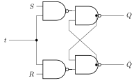
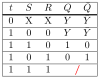
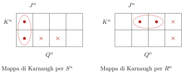
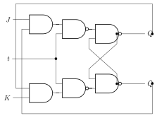
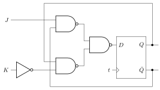
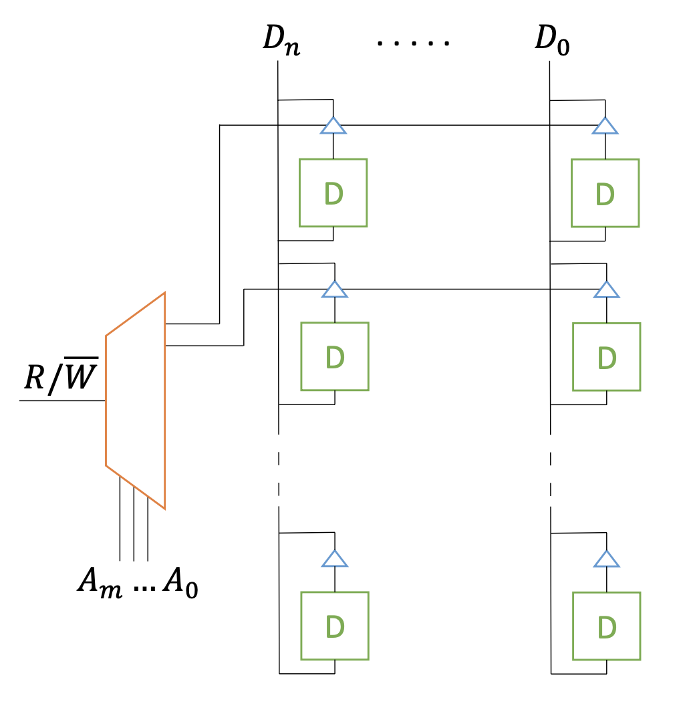

6 Sequential circuits
A digital device - such as, in general, a computer - cannot be constituted solely by combinatorial circuits: it needs, in fact, to be constituted also by memory circuits, that is, circuits that the previous state so that this influences the subsequent outputs. For this reason, these circuits are called , having to depend on the sequence of states assumed by the various components over time.
6.1 Flip-flop
The elementary circuit for storing a simple bit of information is the flip-flop, so called because of the noise caused by the first prototypes. We will start from their fundamental structure, the latch, from which all the various types of flip-flops are then built.
6.1.1 Latch
The is a circuit in which two of the four total inputs derive directly from the outputs in the form of feedback. The latches that we will study are constituted by two NAND gates, but different versions exist.
To each pair of inputs (with the exception of one) corresponds a single pair of stable outputs. To understand which ones, let’s remember the fundamental products of the NAND:
\[ NAND(X,0)=1 \hspace{1.2cm} NAND(X,1)=\bar{X} \]
Let’s look at the various combinations now:
\(A=0\) and \(B=0\): the outputs must necessarily be equal to \(1\), and these will be retroactively placed as input in the two \(NAND\)s, coherently producing the same HIGH signal in both lines.
\(A=0\) and \(B=1\): whatever \(Q_2\) comes out, the output \(Q_1\) will necessarily be \(1\); the latter, multiplied by \(B\) and negated, will give \(0\) as a result, so ultimately we have \(Q_1=1\) and \(Q_2=0\). Obviously the situation will be symmetrical in the case \(A=1\) and \(B=0\): in general the output will be complementary with respect to the fixed input of the same logic gate.
\(A=1\) and \(B=1\): the output will always be complementary with respect to the retroactive input that produced it, so as long as \(Q_1\) and \(Q_2\) are complementary to each other, the state of the circuit will remain stable.
All the reasoning is summarized in the following truth table:
From the perspective of information storage, we already notice aspects that can be useful to us: when the inputs are complementary to each other (central rows of the table), the outputs are fixed to values that are in turn complementary to each other; what is more important is that once the inputs are set to \(1-1\), these outputs remain constant, as if they were - precisely - in memory.
Input \(0-0\) appears to be the most , in the sense that it produces outputs that are equal to each other and are not compatible with the storage discussion just made, since to be compatible with input \(1-1\) they must be two complementary values. To better understand this discussion, let’s imagine initially setting \(A=B=0\) and simultaneously modifying these inputs to \(A=B=1\): what would happen?
In an ideal circuit, the two signals travel at the same speed and the outputs are complemented at the same instant, producing \(Q_1=Q_2=0\); these will be retroactively propagated to the two unfixed inputs, causing a new complementation that will make them return to \(Q_1=Q_2=1\), repeating the cycle indefinitely and thus obtaining an oscillation of the signal along the lines. In a real circuit, at some point one of the two signals will be propagated faster, thus being complemented before the other undergoes the same process, and in this way the system finds itself in a stable state - but which is, however, unpredictable - between \(1-0\) and \(0-1\). The phenomenon just described is called race competition and is something that one always wants to avoid precisely because of the randomness of the final result that nullifies the logic of sequentiality.
6.1.2 S-R Flip-flop
For the realization of a real memory device, therefore, we postulate that the two outputs must necessarily be complementary to each other: consequently, we will indicate them with \(Q\) and \(\bar{Q}\).
Another element to add is a synchronizer, that is, a signal that the device when it is active and leaves it when it is not active. This is useful when it is necessary to make a state change through new inputs, avoiding a possible race competition: having a signal that prevents a new state change until the previous one has been completely memorized makes the use of the device safer.
The addition of the synchronizer \(t\) can be obtained by adding two more NAND gates, in each of which one input will be given precisely by \(t\) and the other will be the fixed input considered in the latch; the output of these gates will then reconnect to the input of the NAND gates seen previously:

We note that when the synchronizer is active (\(t=1\)), the input signals are inverted, so the truth table of the device will be equal to table [tab:circuiti-sequenziali-latch] with the difference that the outputs will be inverted between the first and fourth rows and between the second and third.
We have renamed the generic inputs \(A-B\) to \(S-R\), where these variables stand for set-reset: with \(S=1\) and \(R=0\), in fact, \(Q=1\) is , while with \(S=0\) and \(R=1\), \(Q=0\) is . For this reason, this flip-flop is called a .
Looking at the circuit in figure [fig:circuiti-sequenziali-flip-flop-sr], let’s calculate what the variable \(Q^{n+1}\) corresponds to starting from the previous state; assuming that the device is on (\(t=1\)), we will have
\[ \label{eq:circuiti-sequenziali-flip-flop-sr-espressione-algebrica} Q^{n+1}=\left(\overbar{\bar{S}\cdot\overbar{Q\bar{R}}}\right)^n=\left(S+Q\bar{R}\right)^n \]
The algebraic form also confirms, therefore, that the input \(0-0\) is the one that preserves the state of \(Q\).
6.1.3 J-K Flip-flop
Having a state is always a risk to keep in mind. To try to eliminate it, it is possible to try to associate a stable output (\(1-0\) or \(0-1\)) with this state; let’s now build a circuit in which the input \(1-1\) is associated with the inversion of \(Q\) with \(\bar{Q}\) (we will see later why precisely this output is the most convenient to realize). This circuit is called a in honor of Jack Kilby, the inventor of integrated circuits.
To build the new circuit, it is necessary to write \(S\) and \(R\) as a function of the two new variables \(J\) and \(K\). First, let’s see which combinations of \(S-R\) correspond to each possible transition from \(Q^n\) to \(Q^{n+1}\) (which we will indicate with \(Q^n\to Q^{n+1}\)):
\(0\to0\): the memory state is preserved, so one possibility is that \(S=R=0\); another possibility is that the reset \(R=1\) is fixed and, consequently, \(S=0\)
\(1\to0\): the change of output necessarily implies the reset \(R=1\) and therefore \(S=0\)
\(0\to1\): the change of output necessarily implies the set \(S=1\) and therefore \(R=0\)
\(1\to1\): the memory state is preserved, so one possibility is that \(S=R=0\); another possibility is that the set \(S=1\) is fixed and, consequently, \(R=0\)
Summarizing:

Now we can build the table also including the variables \(J-K\): we will consider, therefore, the various combinations of \(J^n\), \(K^n\) and \(Q^n\); based on the combinations of \(J^n\) and \(K^n\) we will write the consequent \(Q^{n+1}\) (we remember that the behavior must be the same as the set-reset with the only difference that the input \(1-1\) must invert the state of \(Q^n\)); finally, we will report for each combination of \(Q^n\) and \(Q^{n+1}\) the inputs \(S-R\) as reported in the table just built.
The Karnaugh maps give us the following:

The algebraic solutions will be
\[ S=\bar{Q}J \hspace{1.2 cm} R=QK \]
from which the circuit is obtained:

Any other choice for the input \(J=K=1\) would have led to a more complex and artificial circuit.
Returning to equation [eq:circuiti-sequenziali-flip-flop-sr-espressione-algebrica] and substituting the values of \(S\) and \(R\) as a function of \(J\) and \(K\), we also obtain the algebraic expression for the J-K flip-flop:
\[ Q^{n+1}=(S+Q\bar{R})^n=\left(\bar{Q}J+Q\overbar{QK}\right)^n=\left(\bar{Q}J+Q\left(\bar{Q}+\bar{K}\right)\right)^n \]
From which we will have
\[ \label{eq:circuiti-sequenziali-flip-flop-jk} \boxed{Q^{n+1}=\left(\bar{Q}J+Q\bar{K}\right)^n} \]
6.1.4 D Flip-flop
It is possible to build a flip-flop using only one input \(D\): this device is called a .
To realize it, let’s retrace what we did to design the J-K flip-flop: let’s consider all possible combinations of \(Q^n\) and \(Q^{n+1}\) and write the relative conditions of the input variables so that this state transition occurs.
We postulate that \(D=Q^{n+1}\) regardless of the value assumed by \(Q^n\). The combinations of \(D\) and \(Q^n\) will give us:
From which we trivially find:
\[ J=D \hspace{1.2 cm} K=\bar{D} \]
In circuit form:
In schematic form, the flip-flop is represented by a rectangle, with inputs on the left side and outputs on the right side. We can therefore schematize the D flip-flop as follows:
The variable \(D\) is therefore useful for establishing the output \(1-0\) or \(0-1\); from the moment one simply wishes to preserve the state as it is, it is sufficient to the device by setting \(t=0\).
Realize a J-K flip-flop starting from a D flip-flop.
What we need to do is in a certain sense the of what was seen in table [tab:circuiti-sequenziali-flip-flop-d]: we will have to write the various combinations of \(J^n\), \(K^n\) and \(Q^n\), the next state \(Q^{n+1}\) associated with each combination and finally the variable \(D^n\); at that point we will be able to derive \(D^n\) as a function of \(J^n\) and \(K^n\), which is precisely our objective.
The Karnaugh map gives us:
which translates into
\[ D=\bar{Q}J+Q\bar{K} \]
The reasoning followed is the most general one applicable to any problem of this type. For this specific case, however, it would have been enough to consider equation [eq:circuiti-sequenziali-flip-flop-jk] and remember that \(D^n=Q^{n+1}\).
In any case, the circuit will be the following:

Find the truth table of the flip-flop described by the following equation:
\[ Q^{n+1}=[Q\oplus(M\oplus N)]^n \]
Also, realize this flip-flop starting from a J-K flip-flop.
Truth table:
To build the flip-flop from the J-K, it is useful to look at equation [eq:circuiti-sequenziali-flip-flop-jk] comparing it with the one given by the text, which is explicit as
\[ Q^{n+1}=\left[Q\left(\overbar{M\oplus N}\right)+\bar{Q}(M\oplus N)\right]^n \]
from which we find:
\[ \begin{cases} J=M\oplus N\\ \bar{K}=\overbar{M\oplus N} \end{cases} \Longrightarrow \\ \begin{cases} J=M\oplus N\\ K=M\oplus N \end{cases} \]
The circuit, therefore, will be
6.2 Counters
Flip-flops are the unit for realizing sequential circuits. The simplest to imagine are counters, that is, circuits with the task of reporting numbers in sequence; to do this, it is evident that each state of the system must be influenced by the previous state, so it is certainly a sequential type circuit.
6.2.1 Decimal counter
are counters of the sequence of numbers from \(0\) to \(9\). Since there are ten numbers in total, we will need four bits to encode them all.
As mentioned, each state that encodes a number will correspond to the next state that will encode the next number, finally reaching the number \(9\) beyond which it will start again from \(0\). The truth table, therefore, will be the following:
The remaining six combinations are all redundant terms.
We obtain the following expressions:
\[ \begin{aligned} &A^{n+1}=\bar{A}^n\\ &B^{n+1}=\left[B\bar{A}+\bar{B}(A\bar{D})\right]^n\\ &C^{n+1}=\left[C\left(\bar{A}+\bar{B}\right)+\bar{C}(AB)\right]^n\\ &D^{n+1}=\left[D\bar{A}+\bar{D}(ABC)\right]^n \end{aligned} \]
Note that in the case of \(D^{n+1}\) we could have paired the minterm \(ABC\bar{D}\) with the redundant term \(ABCD\), but in this way we would have \(\bar{D}\) which instead is useful for writing \(D^{n+1}\) in flip-flop form: if we note, in fact, all the expressions obtained are in the same form as equation [eq:circuiti-sequenziali-flip-flop-sr-espressione-algebrica], therefore they can all be built using J-K flip-flops.1
Realize a four-bit down counter.
Let’s start from the truth table.
Now let’s use Karnaugh maps to obtain the algebraic forms:
We obtain:
\[ A^{n+1}=\bar{A}^n \]
\[ B^{n+1}=\left[AB+\bar{A}\bar{B}\right]^n=\overbar{A\oplus B}^n \]
\[ \begin{aligned} C^{n+1}&=\left[AC+BC+\bar{A}\bar{B}\bar{C}\right]^n=\left[C(A+B)+\bar{C}\left(\bar{A}\bar{B}\right)\right]^n=\\ &=\left[C(A+B)+\bar{C}\left(\overbar{A+B}\right)\right]^n=\left[C\oplus\left(\overbar{A+B}\right)\right]^n \end{aligned} \]
\[ \begin{aligned} D^{n+1}&=\left[AD+BD+CD+\bar{A}\bar{B}\bar{C}\bar{D}\right]^n=\\ &=\left[D(A+B+C)+\bar{D}\left(\bar{A}\bar{B}\bar{C}\right)\right]^n=\\ &=\left[D(A+B+C)+\bar{D}\left(\overbar{A+B+C}\right)\right]^n=\left[D\oplus\left(\overbar{A+B+C}\right)\right]^n \end{aligned} \]
6.2.2 Johnson counter
In the , counting is performed by changing only one bit at a time. Here is an example with three bits:
Before observing the algebraic expressions, let’s understand how many states are possible for an \(m\)-bit Johnson counter. Let’s divide the calculation into three logical steps:
The first state is certainly the one that defines zero, trivially given by \(000\dots0\).
At this point we start replacing the \(0\)s from the left with \(1\)s until we reach a state with only \(1\)s:
\[ 100\dots0\to110\dots0\to\dots\to111\dots1 \]
Since there are \(m\) bits, we will have a total of \(m\) states.
Finally, we will replace the \(1\)s from left to right with \(0\)s, excluding the last bit, since otherwise we would get \(000\dots0\), which we have already considered in the first point:
\[ 011\dots1\to001\dots1\to\dots\to000\dots1 \]
Since we replace all bits except one, we get a total of \(m-1\) states.
Summing the three contributions, we get:
\[ N_{states}=1+m+(m-1)=2m \]
Now let’s look for the algebraic formulas, returning to the table proposed as an example:
\[ \begin{aligned} &A^{n+1}=\bar{C}^n\\ &B^{n+1}=A^n\\ &C^{n+1}=B^n \end{aligned} \]
The solution is very elegant, providing us with a simple chain of D flip-flops:
This circuit extends to a generic \(m\)-bit Johnson counter: it will be enough to put \(m\) D flip-flops in series and connect the output of one to the input of the other, with the exception of the last one with the first, since it will be necessary to connect the negated output to the input of the first flip-flop in the chain.
There is, however, a drawback: if - for any reason - the initial state of the system coincided with one of the redundant terms, the circuit would oscillate between two redundant terms, preventing the correct functioning of the counter.
Starting from \(A=0\), \(B=1\) and \(C=0\), in fact, we get:
\[ \begin{cases} A^n=0\\ B^n=1\\ C^n=0 \end{cases} \Longrightarrow \\ \begin{cases} A^{n+1}=1\\ B^{n+1}=0\\ C^{n+1}=1 \end{cases} \Longrightarrow \\ \begin{cases} A^{n+2}=0\\ B^{n+2}=1\\ C^{n+2}=0 \end{cases} \]
To solve this drawback, it is possible to rewrite the expression of \(B^{n+1}\) in a slightly more articulated way:
\[ \begin{aligned} &A^{n+1}=\bar{C}^n\\ &B^{n+1}=\left[A\left(B+\bar{C}\right)\right]^n\\ &C^{n+1}=B^n \end{aligned} \]
Let’s verify what happens starting from a redundant term:
\[ \begin{cases} A^n=0\\ B^n=1\\ C^n=0 \end{cases} \Longrightarrow \\ \begin{cases} A^{n+1}=1\\ B^{n+1}=0\\ C^{n+1}=1 \end{cases} \Longrightarrow \\ \begin{cases} A^{n+2}=0\\ B^{n+2}=0\\ C^{n+2}=0 \end{cases} \]
from which the system returns to normal counting.
6.3 Registers
So far we have seen the storage of data exclusively at one bit within flip-flops. To obtain multi-bit memory devices, it is necessary to combine these flip-flops, obtaining the so-called .
6.3.1 Shift registers
A first idea is to place D flip-flops in cascade, also connecting the last one with the first, so that the bits are propagated from one flip-flop to the next, passing from state \(n\) to state \(n+1\) according to the synchronizer \(t\). These registers are called .
Due to the ring closure of the device, a cyclicity occurs in the order of the bits: every \(n\) clocks, where \(n\) is the number of flip-flops, the same data sequence will be repeated.
To modify the bit sequence, it is possible to place multiplexers between one flip-flop and another, so that one input is connected to the output of the previous flip-flop and the other input to an external circuit that takes care of loading a new bit.
Without the closure of the device (i.e., the connection of the last flip-flop in the chain to the first), a shift register can be used for the conversion of a serial signal into a parallel signal and vice versa:
With a serial signal, data are transferred one bit at a time - in serial form, precisely - on the same line, so for parallel-to-serial conversion, the introduced vertical lines load the data onto the flip-flops of the register, which will have the task of transferring them to the right sequentially. In sequential-to-parallel conversion, instead, the reverse happens: following the loading of data onto the register, the vertical lines are activated, collecting all the bits at once.
Realize an \(n\)-bit shift register that starts from a state where all bits are equal to \(0\):
\[ 00\dots0 \to 10\dots0 \to 01\dots0 \to \dots \]
Let’s reason by considering three bits, keeping in mind that the discussion can extend to generic \(n\) bits.
\[ \begin{cases} A^{n+1}=\left[\bar{A}\bar{B}\bar{C}\right]^n=\overbar{A+B+C}^n\\ B^{n+1}=A^n\\ C^{n+1}=B^n \end{cases} \]
This is therefore a normal shift register, with the only exception of the connection between the last flip-flop and the first, which includes the presence of a NOR gate whose inputs are all the bits of the device.
6.3.2 Memory
Placing flip-flops exclusively in sequence to create registers that store information becomes inconvenient beyond a certain number of bits. To organize such a device more efficiently, it is useful to create a matrix of flip-flops, whose rows can be accessed through a demultiplexer.
R0.5

Let’s look at figure [fig:rom] a memory called (Read Only Memory),2 capable only of reading the data contained within the flip-flops previously loaded with the data during the device’s realization phase. Once the desired line is selected by means of a demultiplexer, the tristates positioned at the output of the flip-flops of that row will be activated, closing the flip-flop circuit and allowing the data to be read from above.
If the circuit also allows writing data to memory, we will speak of (Random Access Memory), where indicates the fact that the access time to each memory location is the same, since it is possible to access the memory unit directly, i.e., without sequentially traversing others. For efficiency reasons, RAM has the characteristic of volatility, i.e., the loss of information when the electrical power is interrupted.
6.4 State machines
We conclude the chapter on sequential logic by talking about , reasoning in particular about finite state machines (FSM, which stands for Finite State Machines). These are in all respects system models that move between different states \(Q_i\) (in discrete and finite number) considering one or more inputs \(C_i\) at each new state and producing outputs \(P_i\), also called control signals.
Let’s summarize the operation in the following steps:3
The sequential part will define a new state \(Q^n\) starting from the received input, also considering the previous state \(Q^{n-1}\) that the sequential circuit itself
This state (together, eventually, with the input \(C^n\), as we will see better later) will produce the control signal \(P^n\)
The new input signal \(C^n\) will encounter a combinatorial logic circuit together with the state \(Q^n\), producing the input that will define \(Q^{n+1}\), from which the cycle will restart
We distinguish two types of state machines:
: the output \(P\) is associated directly with the state \(Q\), therefore it will depend only on it
: the output \(P\) is not associated exclusively with the state \(Q\) but will also depend on the input \(C\)
To understand the difference between the two behaviors, let’s start with an example: let’s imagine having two inputs, \(M\) and \(N\) (which we will indicate in the form \((M,N)\)) and wanting to identify the transition \((1,0)\to(0,1)\); to do this, we will build our machine in such a way that the control signal is equal to \(0\) for any other transition and is instead equal to \(1\) when this transition occurs.
Let’s start by building a Moore machine and let’s define the number of states:
The system will first be in an initial state \(S_0\): what happens at that point? There are two possibilities: if the input is \((0,0)\), \((0,1)\) or \((1,1)\), it will remain in state \(S_0\), while if the input is \((1,0)\), the system will into state \(S_1\).
Once in state \(S_1\), there are three possibilities this time: if the input is \((0,0)\) or \((1,1)\), the system will return to state \(S_0\), having to start over; if the input is \((1,0)\), it will remain in \(S_1\), the condition for it to be effectively in \(S_1\) having been repeated; finally, if the input is \((0,1)\), then the desired transition has actually occurred, so the system can move to \(S_2\).
If the system is in \(S_2\), as mentioned, the objective has been reached, so the output will signal \(P=1\). At that point there are two possibilities: if the new input is \((0,0)\), \((0,1)\) or \((1,1)\), the system will transition to \(S_0\), having to repeat the cycle, while if the input is \((1,0)\), the system will go directly to \(S_1\), the desired transition having partially occurred again.
To summarize what is written in a single scheme, it is possible to create a , in which the states are indicated by circles and the transitions by arrows in which the associated input is specified.
As usual, to build the circuit we must start from the truth table, so we need to define all possible inputs and outputs of the system.
Inputs will certainly be \(M\) and \(N\) along with the variables that define the state of the system; since there are three states in total, we will need two variables that will uniquely identify the state itself, which we will call \(A\) and \(B\). To the input \(\left(M,N,A^n,B^n\right)\) will correspond the output \(\left(A^{n+1},B^{n+1},Z\right)\), where \(Z\) is the control signal.
We also note from the truth table that the control signal is uniquely determined by the state: it is sufficient to set \(Z=B\), in fact, since it is sufficient for \(B\) to be active for the presence of the system in state \(S_2\) to be signaled, which indicates the correct transition.
For the rest, we obtain:
\[ \begin{cases} A^{n+1}=\left[M\bar{N}\right]^n\\ B^{n+1}=\left[\bar{M}NA\right]^n \end{cases} \]
Translated into circuit form:
Let’s now see how to realize the same system using a Mealy machine:
This time too the system will be in an initial state \(S_0\), to which it will be brought back with all inputs except \((1,0)\), which will take it to state \(S_1\).
From state \(S_1\) there are three possibilities this time: if the input is \((0,0)\) or \((1,1)\), the system will return to \(S_0\) with a control signal \(Z=0\); if the input is \((1,0)\), the system will remain in \(S_1\); if the input is \((0,1)\), the system will return to \(S_0\) with a control signal \(Z=1\), indicating that the desired transition has actually occurred.
Since this time there are only two states, it will be sufficient to consider a single variable \(A\) to identify them.
In this case, the state is not sufficient to define the control signal, so we will also have to resort to the input \((M,N)\):
\[ Z=\left[\bar{M}NA\right]^n \]
The next state, instead, is given by
\[ A^{n+1}=\left[M\bar{N}\bar{A}+M\bar{N}A\right]^n=\left[M\bar{N}\right]^n \]
So we find the following circuit:
Realize a state machine that identifies the bit sequence
\[ \dots011010\dots \]
on a data line \(M\).
Also, realize the relative circuit through the use of J-K flip-flops.
The first thing to do is to start from the Moore diagram.
From this we can build the truth table, which will be determined by four inputs, namely the bit \(M\) along with the three variables useful for defining the state of the system (we use three since the total number of states is seven).
The control signal will evidently be
\[ Z=BC \]
To find the next states, we use, as usual, Karnaugh maps. Keep in mind, however, that the text requires the circuit to be obtained using J-K flip-flops, so the generic variable \(Q^{n+1}\) must be in the form
\[ Q^{n+1}=\left(\bar{Q}J+Q\bar{K}\right)^n \]
The various groupings of the map, therefore, must be made in such a way as to always distinguish the terms with \(Q\) and with \(\bar{Q}\), or - in other words - in such a way that the variable \(Q\) never simplifies.
\[ \begin{aligned} A^{n+1}&=\left[\bar{A}\left(B\bar{C}+\bar{B}C+\bar{M}\right)+A\left(CM+\bar{B}\bar{C}\bar{M}\right)\right]^n=\\ &=\left[\bar{A}\left(B\oplus C+\bar{M}\right)+A\left(CM+\bar{B}\bar{C}\bar{M}\right)\right]^n \end{aligned} \]
\[ \begin{aligned} B^{n+1}&=\left[\bar{B}(AC+AM)+B\left(\bar{A}\bar{C}M\right)\right]^n=\\ &=\left[\bar{B}(A(C+M))+B\left(\bar{A}\bar{C}M\right)\right]^n \end{aligned} \]
\[ C^{n+1}=\left[\bar{C}\left(AB\bar{M}\right)+C\left(A\bar{M}+\bar{A}\bar{B}M\right)\right]^n \]
With much effort and much patience (which I lack) it is possible to realize the circuit with three J-K flip-flops.
Realize an elevator controller with the following characteristics:
The elevator can be on one of three floors: ground floor, first floor or second floor
There is a button that expresses two possible values: and
The elevator goes up one floor every time the button is on and goes down one floor every time it is on
There are two lights that indicate the current floor: both lights off (00) indicate the ground floor; the first light off and the second on (01) indicate the first floor; the first light on and the second off (10) indicate the second floor.
It is evident that the elevator floors correspond to the states in which the state machine can be, while the button is nothing more than the input described by a single bit, associating up with \(1\) and down with \(0\).
In this system there is no control signal.
The truth table is the following:
\[ \begin{cases} A^{n+1}=\left[AM+BM\right]^n=\left[M(A+B)\right]^n\\ B^{n+1}=\left[A\bar{M}+\bar{A}\bar{B}M\right]^n \end{cases} \]
The circuit, therefore, is:
\(A^{n+1}\) would actually be a D flip-flop, which is however built from a J-K.↩︎
In reality, it is not clear to me whether it is actually a ROM or a RAM, which also has writing capabilities. I interpreted the input \(R/\bar{W}\) as , in the sense that it is only possible to read and not write, since otherwise I would not be able to explain how writing could also occur through the use of the same demultiplexer.↩︎
For simplicity, we will assume that the input \(C\) and the control signal \(P\) are only one, but it should be borne in mind that, in general, there can be more than one.↩︎